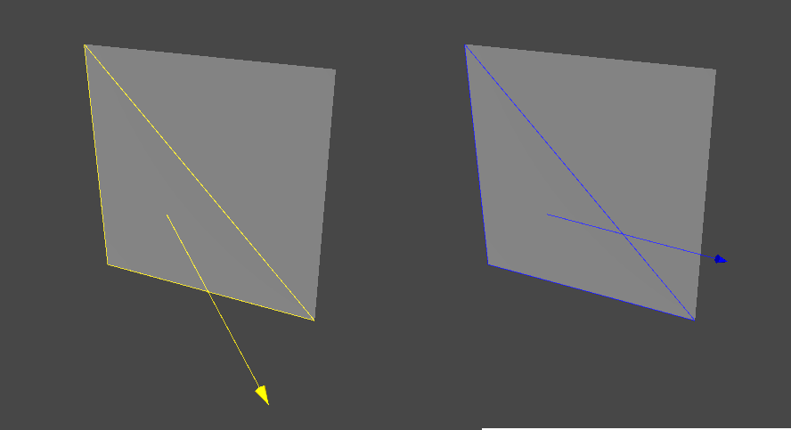
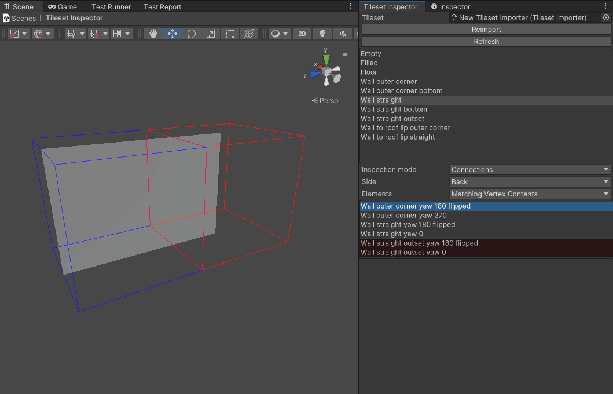

Debugging your Tileset
When a tile does not act as you expect, you can view it in the tileset inspector.
Some common issues when developing tiles are that the GridPlacer does not place it on your tiles appropriately, or never places the tile next to another tile but you expect it should.
Open the Wildtile tileset debugger by clicking through the menu bar → Window → Wildtile → Tileset Inspector.
Tip
The tileset inspector acts like any other Unity window - you can move it freely or dock it to a panel in the editor.
At the top of the tileset inspector, you can select which tileset to view. Click and drag your importer asset from the project window to the Tileset field.
The inspector will now show all the tiles that you have imported. Double click on a tile to open the inspector stage.
Inspection Modes
The inspector stage contains your tile model and, by default, a neighbouring tile. This view is the most common while debugging tiles.
You can change the inspection mode between Vertex Contents and Connections.
Vertex Contents
This mode shows an arrow pointing at one of the tile's corners. The arrow's colour indicates whether Wildtile will import the tile with that corner inside or outside: A yellow line indicates the vertex is outside, and dark blue is inside.
Tip
The inside-outside colours can be remembered as yellow vertices are outside so they can see the sun; dark blue vertices are inside and are in shade.
Select different Vertices to see how Wildtile interprets the model in different directions. The triangles indicate which faces the ray intersects with, and you might need to check your import settings to change how the ray interacts with different materials.

Connections
This mode shows all available neighbours in the lower list box in the editor window and displays a neighbour tile on the stage alongside the current tile. Clicking on a different option in the neighbours list will hide the previous neighbour and show the newly selected neighbour.

The Elements dropdown box contains three options: Valid Only, Matching Vertex Contents, and All.
Valid Only only shows neighbours that match along the selected face.
Matching Vertex Contents shows all neighbours that share vertex inside-ness on the selected face.
The inspector shows the matching tiles in grey and mismatching tiles in red.
Selecting a red neighbour tile shows it on the stage, separated from the main tile. It will also indicate why Wildtile will not connect the tiles, whether it's mismatches between vertex positions, edges, normals, or materials.
All shows all tiles, even ones with conflicting tile-corner insideness, e.g. having a ground floor below another ground floor.
The inspector shows tiles that do not share vertex insideness in green.
If you spot a tile that should be connected amongst the green tiles, check the vertex contents of the current tile and the neighbour tile - Wildtile's importer has incorrectly interpreted one or the other. You must change the model or the import settings to fix it.
Reimport and Refresh
The buttons at the top of the inspector provide quick access to reloading the tileset.
The Reimport button is a shortcut to the Process Models button on the tileset importer asset. Reimporting using this button or using the Process Models button on the asset will automatically refresh the tileset inspector.
The Refresh button provides a sure-fire way of refreshing the tileset inspector in case the tileset has changed and the inspector was not notified (e.g. because of an error in the import script).